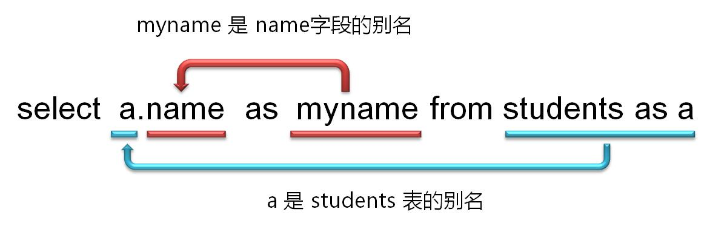
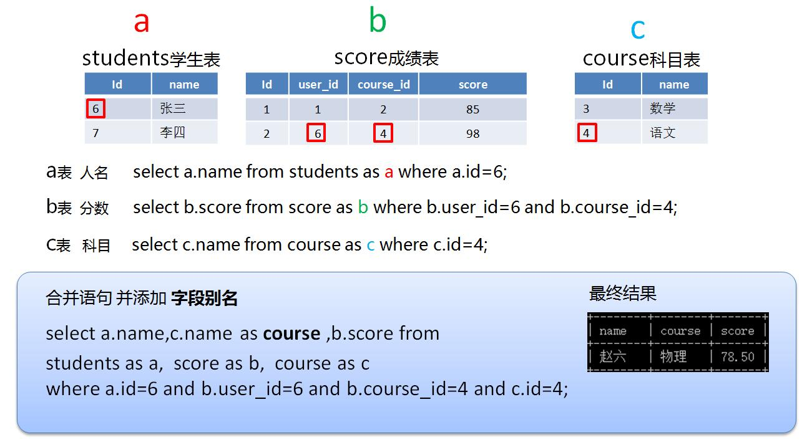

<!DOCTYPE html><html><head><meta charset="utf-8"><title>教学讲义 | 技术学派</title><meta name="viewport" content="width=device-width,initial-scale=1,maximum-scale=1"><meta name="keywords" content="IT培训, Python, 大数据, 人工智能, Web前端, PHP, "><meta name="description" content="第一章 MySQL介绍第一节 关系型数据库关系模型：关系型数据库以行和列的形式存储数据，这一系列的行和列被称为表，一组表组成了数据库。表与表之间的数据记录有关系。数据保存在表内，行（记录）用于记录数据，列（字段）用于规定数据格式SQL(Structured Query Language)是一种特殊目的的编程语言，是一种数据库查询和程序设计语言，用于对数据库进行增、删、改、查操作。这类数据库包括：M"><meta property="og:type" content="website"><meta property="og:title" content="教学讲义"><meta property="og:url" content="http://www.JiShuXuePai.com/tech/mysql/notes.html"><meta property="og:site_name" content="技术学派"><meta property="og:description" content="第一章 MySQL介绍第一节 关系型数据库关系模型：关系型数据库以行和列的形式存储数据，这一系列的行和列被称为表，一组表组成了数据库。表与表之间的数据记录有关系。数据保存在表内，行（记录）用于记录数据，列（字段）用于规定数据格式SQL(Structured Query Language)是一种特殊目的的编程语言，是一种数据库查询和程序设计语言，用于对数据库进行增、删、改、查操作。这类数据库包括：M"><meta property="og:locale" content="zh-CN"><meta property="og:image" content="http://www.jishuxuepai.com/tech/mysql/images/bieming.jpg"><meta property="og:updated_time" content="2018-05-11T08:14:18.118Z"><meta name="twitter:card" content="summary"><meta name="twitter:title" content="教学讲义"><meta name="twitter:description" content="第一章 MySQL介绍第一节 关系型数据库关系模型：关系型数据库以行和列的形式存储数据，这一系列的行和列被称为表，一组表组成了数据库。表与表之间的数据记录有关系。数据保存在表内，行（记录）用于记录数据，列（字段）用于规定数据格式SQL(Structured Query Language)是一种特殊目的的编程语言，是一种数据库查询和程序设计语言，用于对数据库进行增、删、改、查操作。这类数据库包括：M"><meta name="twitter:image" content="http://www.jishuxuepai.com/tech/mysql/images/bieming.jpg"><link rel="stylesheet" href="/libs/bootstrap/bootstrap-grid.css"><link rel="stylesheet" href="/libs/font-awesome/css/font-awesome.min.css"><link rel="stylesheet" href="/libs/titillium-web/styles.css"><link rel="stylesheet" href="/libs/source-code-pro/styles.css"><link rel="stylesheet" href="/css/style.css"><script src="/libs/jquery/jquery.min.js"></script><link rel="stylesheet" href="/libs/lightgallery/css/lightgallery.min.css"><link rel="stylesheet" href="/libs/justified-gallery/justifiedGallery.min.css"><script>var _hmt=_hmt||[];!function(){var e=document.createElement("script");e.src="//hm.baidu.com/hm.js?4c1bd812de3c30edbaa2b803c66f0a04";var t=document.getElementsByTagName("script")[0];t.parentNode.insertBefore(e,t)}()</script></head></html><body><div id="wrap"><header id="header"><div id="header-outer" class="outer"><div class="container"><div class="container-inner"><div id="header-title"><h1 class="logo-wrap"><a href="/" class="logo"></a></h1></div><div id="header-inner" class="nav-container"><a id="main-nav-toggle" class="nav-icon fa fa-bars">菜单</a><div class="nav-container-inner"><ul id="main-nav"><li class="main-nav-list-item"><a class="main-nav-list-link" href="/">主页</a></li><li class="main-nav-list-item"><a class="main-nav-list-link" href="/edu/index.html">学编程</a></li><li class="main-nav-list-item"><a class="main-nav-list-link" href="/blog/">博客</a></li><li class="main-nav-list-item"><a class="main-nav-list-link" href="/tips.html">学习建议</a></li><li class="main-nav-list-item"><a class="main-nav-list-link" href="/about.html">关于</a></li></ul><nav id="sub-nav"><div id="search-form-wrap"><form class="search-form"><input type="text" class="ins-search-input search-form-input" placeholder="搜索"> <button type="submit" class="search-form-submit"></button></form><div class="ins-search"><div class="ins-search-mask"></div><div class="ins-search-container"><div class="ins-input-wrapper"><input type="text" class="ins-search-input" placeholder="想要查找什么..."> <span class="ins-close ins-selectable"><i class="fa fa-times-circle"></i></span></div><div class="ins-section-wrapper"><div class="ins-section-container"></div></div></div></div><script>window.INSIGHT_CONFIG={TRANSLATION:{POSTS:"文章",PAGES:"页面",CATEGORIES:"分类",TAGS:"标签",UNTITLED:"(未命名)"},ROOT_URL:"/",CONTENT_URL:"/content.json"}</script><script src="/js/insight.js"></script></div></nav></div></div></div></div></div></header><div class="container"><div class="main-body container-inner"><div class="main-body-inner"><section id="main"><div class="main-body-header"><h1 class="header"><em class="page-title-link" data-url="/tech/mysql/notes.html">教学讲义</em><div class="author">江卫</div></h1></div><div class="main-body-content"><article id="page-" class="article article-single article-type-page" itemscope itemprop="blogPost"><div class="article-inner"><div class="article-entry" itemprop="articleBody"><h1 id="第一章-MySQL介绍"><a href="#第一章-MySQL介绍" class="headerlink" title="第一章 MySQL介绍"></a>第一章 MySQL介绍</h1><h2 id="第一节-关系型数据库"><a href="#第一节-关系型数据库" class="headerlink" title="第一节 关系型数据库"></a>第一节 关系型数据库</h2><ul><li><p>关系模型：</p><p>关系型数据库以行和列的形式存储数据，这一系列的行和列被称为表，一组表组成了数据库。</p><p>表与表之间的数据记录有关系。</p><p>数据保存在表内，行（记录）用于记录数据，列（字段）用于规定数据格式</p></li><li><p>SQL(Structured Query Language)</p><p>是一种<code>特殊目的的编程语言</code>，是一种数据库查询和程序设计语言，用于对数据库进行增、删、改、查操作。这类数据库包括：MySQL,Oracle, Sybase, SQL Server, DB2, Access 等等，SQL语言在这些数据库上是通用的。</p></li><li><p>存储引擎（详见第九章）</p><ul><li><p>MyISAM引擎</p><p>查询速度快，适合查询比较频繁的表</p></li><li><p>innoDB</p><p>支持事务，外键等，查询效率低于MyISAM引擎</p></li></ul></li></ul><h2 id="第二节-MYSQL基本语法"><a href="#第二节-MYSQL基本语法" class="headerlink" title="第二节 MYSQL基本语法"></a>第二节 MYSQL基本语法</h2><h3 id="基本规范"><a href="#基本规范" class="headerlink" title="基本规范"></a>基本规范</h3><ul><li>数据库名称、表名称、字段名称全部小写</li><li>SQL语句必须以分号’ ; ‘结尾</li></ul><h3 id="注释"><a href="#注释" class="headerlink" title="注释"></a>注释</h3><figure class="highlight plain"><table><tr><td class="gutter"><pre><span class="line">1</span><br><span class="line">2</span><br><span class="line">3</span><br><span class="line">4</span><br><span class="line">5</span><br><span class="line">6</span><br><span class="line">7</span><br><span class="line">8</span><br><span class="line">9</span><br></pre></td><td class="code"><pre><span class="line">mysql&gt; select 1+1;     # 这个注释直到该行结束</span><br><span class="line">mysql&gt; select 1+1;     -- 这个注释直到该行结束</span><br><span class="line">mysql&gt; select 1  /* 这是一个在行中间的注释 */ + 1;</span><br><span class="line">mysql&gt; select 1+</span><br><span class="line">/*</span><br><span class="line">这是一个</span><br><span class="line">多行注释的形式</span><br><span class="line">*/</span><br><span class="line">1;</span><br></pre></td></tr></table></figure><h3 id="修改配置文件my-ini"><a href="#修改配置文件my-ini" class="headerlink" title="修改配置文件my.ini"></a>修改配置文件my.ini</h3><ul><li><p>字符集（正确显示中文）</p><blockquote><p>MySQL默认字符集是latin( 拉丁 )，改变为utf8才能正确显示中文</p></blockquote><p>[mysqld]下添加</p><p>character-set-server=utf8</p><p>init-connect=’\set NAMES utf8\’</p></li><li><p>修改mysql提示符</p><blockquote><p>MySQL默认提示符是” mysql&gt;“ ，可以个性化定制，例如：”mysql(数据库)&gt;”</p></blockquote><p>[mysql]下添加</p><p>prompt=”mysql(\d)&gt;”</p><p>​</p></li></ul><p>##第二节 登录与用户管理</p><h3 id="登录"><a href="#登录" class="headerlink" title="登录"></a>登录</h3><p>Mysql是基于C/S架构，必须在客户端通过终端窗口，连接MySQL服务器，进行操作。</p><figure class="highlight plain"><table><tr><td class="gutter"><pre><span class="line">1</span><br><span class="line">2</span><br></pre></td><td class="code"><pre><span class="line">shell&gt; mysql -h host -u user -p</span><br><span class="line">Enter password: ********</span><br></pre></td></tr></table></figure><h3 id="用户管理"><a href="#用户管理" class="headerlink" title="用户管理"></a>用户管理</h3><ul><li>超级用户 root</li><li>修改账号密码，例：</li></ul><figure class="highlight plain"><table><tr><td class="gutter"><pre><span class="line">1</span><br><span class="line">2</span><br><span class="line">3</span><br><span class="line">4</span><br><span class="line">5</span><br></pre></td><td class="code"><pre><span class="line">## DOS命令下修改，将root账号密码修改为1234</span><br><span class="line">mysqladmin -u root password 1234   ##语句最后不能加分号</span><br><span class="line"></span><br><span class="line">##mysql命令</span><br><span class="line">set password for &apos;root&apos;@&apos;localhost&apos;= password(&apos;1234&apos;);</span><br></pre></td></tr></table></figure><h1 id="第二章-操作入门"><a href="#第二章-操作入门" class="headerlink" title="第二章 操作入门"></a>第二章 操作入门</h1><h2 id="第一节-默认数据库"><a href="#第一节-默认数据库" class="headerlink" title="第一节 默认数据库"></a>第一节 默认数据库</h2><ul><li><p>information_schema</p><p>提供了访问数据库元数据的方式。什么是元数据呢？元数据是关于数据的数据，如数据库名或表名，列的数据类型，或访问权限等。有些时候用于表述该信息的其他术语包括“数据词典”和“系统目录”。</p></li><li><p>performance_schema</p><p>mysql 5.5 版本 新增了一个性能优化的引擎</p></li><li><p>mysql</p><p>这个是MySQL的核心数据库，主要负责存储数据库的用户、权限设置、关键字等MySQL自己需要使用的控制和管理信息。不可以删除，也不要轻易修改这个数据库里面的表信息。</p></li><li><p>test</p><p>安装时候创建的一个测试用数据库，空数据库，没有任何表，可以删除（新版mysql已取消）。</p></li></ul><h2 id="第二节-操作数据库"><a href="#第二节-操作数据库" class="headerlink" title="第二节 操作数据库"></a>第二节 操作数据库</h2><ul><li>查看数据库</li></ul><figure class="highlight plain"><table><tr><td class="gutter"><pre><span class="line">1</span><br></pre></td><td class="code"><pre><span class="line">show databases;</span><br></pre></td></tr></table></figure><ul><li>创建数据库</li></ul><figure class="highlight plain"><table><tr><td class="gutter"><pre><span class="line">1</span><br><span class="line">2</span><br><span class="line">3</span><br><span class="line">4</span><br><span class="line">5</span><br></pre></td><td class="code"><pre><span class="line"># 如果没有修改my.ini配置文件的默认字符集，在创建数据库时，指定字符集</span><br><span class="line">create database db_name character set &apos;utf8&apos;;</span><br><span class="line"></span><br><span class="line"># 特殊字符(关键字)用反引号</span><br><span class="line">create database `create`;</span><br></pre></td></tr></table></figure><p>MySQL\data目录下将自动生成一个对应名称的目录，目录内部有一个db.opt文件</p><ul><li>显示数据库创建信息</li></ul><figure class="highlight plain"><table><tr><td class="gutter"><pre><span class="line">1</span><br></pre></td><td class="code"><pre><span class="line">show create database db_name;</span><br></pre></td></tr></table></figure><ul><li>删除数据库</li></ul><figure class="highlight plain"><table><tr><td class="gutter"><pre><span class="line">1</span><br></pre></td><td class="code"><pre><span class="line">drop database db_name;</span><br></pre></td></tr></table></figure><ul><li>使用数据库</li></ul><figure class="highlight plain"><table><tr><td class="gutter"><pre><span class="line">1</span><br></pre></td><td class="code"><pre><span class="line">use database;</span><br></pre></td></tr></table></figure><ul><li>显示当前打开的数据库</li></ul><figure class="highlight plain"><table><tr><td class="gutter"><pre><span class="line">1</span><br></pre></td><td class="code"><pre><span class="line">select database();</span><br></pre></td></tr></table></figure><h1 id="第三章-创建数据表"><a href="#第三章-创建数据表" class="headerlink" title="第三章 创建数据表"></a>第三章 创建数据表</h1><h2 id="第一节-字段类型"><a href="#第一节-字段类型" class="headerlink" title="第一节 字段类型"></a>第一节 字段类型</h2><p>数据类型是指列、存储过程参数、表达式和局部变量的数据特征，它决定了数据的存储方式，代表了不同的信息类型。</p><ul><li>字符串型</li></ul><table><thead><tr><th>类型</th><th>大小</th><th>说明</th></tr></thead><tbody><tr><td>char</td><td>0-255字符</td><td>定长字符串</td></tr><tr><td>varchar</td><td>0-65 535字符</td><td>变长字符串</td></tr><tr><td>tinytext</td><td>0-255字符</td><td>短文本（与char存储形式不同）</td></tr><tr><td>text</td><td>0-65 535字符</td><td>文本</td></tr><tr><td>mediumtext</td><td>0-16 777 215字符</td><td>中等长度文本</td></tr><tr><td>longtext</td><td>0-4 294 967 295字符</td><td>极大文本</td></tr></tbody></table><ul><li>整数型</li></ul><table><thead><tr><th>类型</th><th>字节</th><th>范围（有符号）</th><th>范围（无符号）</th><th>用途</th></tr></thead><tbody><tr><td>tinyint</td><td>1</td><td>(-128，127)</td><td>(0，255)</td><td>很小整数值<br>例:tinyint(6)<br>6位十进制数字</td></tr><tr><td>smallint</td><td>2</td><td>(-32 768，32 767)</td><td>(0，65 535)</td><td>小整数值</td></tr><tr><td>mediumint</td><td>3</td><td>(-8 388 608，8 388 607)</td><td>(0，16 777 215)</td><td>中整数值</td></tr><tr><td>int或integer</td><td>4</td><td>(-2 147 483 648，2 147 483 647)</td><td>(0，4 294 967 295)</td><td>整数值</td></tr><tr><td>bigint</td><td>8</td><td>(-9 233 372 036 854 775 808，9 223 372 036 854 775 807)</td><td>(0，18 446 744 073 709 551 615)</td><td>很大的整数值</td></tr></tbody></table><ul><li>浮点型</li></ul><table><thead><tr><th>类型</th><th style="text-align:center">字节</th><th>范围</th><th>用途</th></tr></thead><tbody><tr><td>float(M,D)</td><td style="text-align:center">4</td><td>23bit（约6~7位 10进制数字）</td><td>单精度浮点数值</td></tr><tr><td>double(M,D)</td><td style="text-align:center">8</td><td>52bit（约15~16位 10进制数字）</td><td>双精度浮点数值</td></tr><tr><td>decimal(M,D)</td><td style="text-align:center">M+2</td><td>依赖于M和D的值</td><td>定点型</td></tr></tbody></table><p>M:精度(数子总长度) D:标度(小数点位数)</p><blockquote><p>浮点数在内存中是按科学计数法来存储的</p><p>float和double的精度是由尾数的位数来决定的</p><p>float尾数23bit：2^23 = 8388608，共7位，绝对能保证精度为6~7位有效数字</p><p>double尾数52bit：2^52 = 4503599627370496，共16位，同理，double的精度为15~16位有效数字。</p></blockquote><ul><li>日期型</li></ul><table><thead><tr><th>类型</th><th>大小(字节)</th><th>范围</th><th>格式</th><th>用途</th></tr></thead><tbody><tr><td>date</td><td>3</td><td>1000-01-01—9999-12-31</td><td>YYYY-MM-DD</td><td>日期值</td></tr><tr><td>time</td><td>3</td><td>‘-838:59:59’—‘838:59:59’</td><td>HH:MM:SS</td><td>时间值或持续时间</td></tr><tr><td>year</td><td>1</td><td>1901—2155</td><td>YYYY</td><td>年份值</td></tr><tr><td>datetime</td><td>8</td><td>1000-01-01 00:00:00/9999-12-31 23:59:59</td><td>YYYY-MM-DD HH:MM:SS</td><td>混合日期和时间值</td></tr><tr><td>timestamp</td><td>4</td><td>1970-01-01 00:00:00/2038结束时间是第 2147483647 秒，北京时间 2038-1-19 11:14:07，格林尼治时间 2038年1月19日 凌晨 03:14:07</td><td>YYYYMMDD HHMMSS</td><td>时间戳，混合日期和时间值</td></tr></tbody></table><ul><li>列举与枚举</li></ul><table><thead><tr><th>名称</th><th>大小</th><th>说明</th></tr></thead><tbody><tr><td>set</td><td>最多64个元素</td><td>列举：可以取SET列表中的一个元素或者多个元素</td></tr><tr><td>enum</td><td>65,535个元素</td><td>枚举：可以取ENUM列表中的一个元素</td></tr></tbody></table><figure class="highlight plain"><table><tr><td class="gutter"><pre><span class="line">1</span><br><span class="line">2</span><br><span class="line">3</span><br><span class="line">4</span><br><span class="line">5</span><br><span class="line">6</span><br><span class="line">7</span><br><span class="line">8</span><br><span class="line">9</span><br></pre></td><td class="code"><pre><span class="line">create table students(</span><br><span class="line">  id tinyint(3), # 微小整型</span><br><span class="line">  name varchar(10), # 可变长度字符</span><br><span class="line">  age smallint(3), # 小整型</span><br><span class="line">  sex enum(&apos;男&apos;,&apos;女&apos;), #单选</span><br><span class="line">  birthday data, # 日期型</span><br><span class="line">  hobby set(&quot;football&quot;,&apos;basketball&apos;,&apos;swmming&apos;), #多选</span><br><span class="line">  introduce	text</span><br><span class="line"> );</span><br></pre></td></tr></table></figure><h2 id="第二节-字段属性"><a href="#第二节-字段属性" class="headerlink" title="第二节 字段属性"></a>第二节 字段属性</h2><table><thead><tr><th>属性</th><th>功能</th><th>说明</th></tr></thead><tbody><tr><td>unsigned</td><td>无符号</td><td>整数/浮点数 为非负数</td></tr><tr><td>zerofill</td><td>前导0</td><td>自动添加unsigned，指定长度整形前加0</td></tr><tr><td>not null</td><td>非空</td><td>不允许为空（必须有值）</td></tr><tr><td>default</td><td>默认值</td><td>当插入记录时没有赋值，自动赋予默认值</td></tr><tr><td>primary key</td><td>主键</td><td>惟一标识一行数据的字段（主键自动为not null）</td></tr><tr><td>auto_increment</td><td>自动增量</td><td>不能单独使用，必须与primary key 一起定义</td></tr><tr><td>unique(unique key)</td><td>唯一</td><td>记录不能重复（允许为null）,一张表可以有多个unique</td></tr></tbody></table><h2 id="第三节-操作数据表"><a href="#第三节-操作数据表" class="headerlink" title="第三节 操作数据表"></a>第三节 操作数据表</h2><h3 id="创建数据表"><a href="#创建数据表" class="headerlink" title="创建数据表"></a>创建数据表</h3><figure class="highlight plain"><table><tr><td class="gutter"><pre><span class="line">1</span><br></pre></td><td class="code"><pre><span class="line">create table [is not exists] tbl_name(col_name data_type,....)</span><br></pre></td></tr></table></figure><p>MySQL\data目录下的数据库目录中将自动生成一个对应名称的.frm文件</p><h3 id="删除数据表"><a href="#删除数据表" class="headerlink" title="删除数据表"></a>删除数据表</h3><figure class="highlight plain"><table><tr><td class="gutter"><pre><span class="line">1</span><br></pre></td><td class="code"><pre><span class="line">drop table [if exists] tbl_name;</span><br></pre></td></tr></table></figure><h3 id="查看数据表"><a href="#查看数据表" class="headerlink" title="查看数据表"></a>查看数据表</h3><figure class="highlight plain"><table><tr><td class="gutter"><pre><span class="line">1</span><br><span class="line">2</span><br><span class="line">3</span><br><span class="line">4</span><br></pre></td><td class="code"><pre><span class="line">show tables [from tbl_name] [like &apos;pattern&apos; | where expr]</span><br><span class="line"></span><br><span class="line">/*查看字母是&apos;abc&apos;开头的表*/</span><br><span class="line">show tables like &apos;abc%&apos;;  ### %是通配符</span><br></pre></td></tr></table></figure><h3 id="查看表创建信息"><a href="#查看表创建信息" class="headerlink" title="查看表创建信息"></a>查看表创建信息</h3><figure class="highlight plain"><table><tr><td class="gutter"><pre><span class="line">1</span><br><span class="line">2</span><br><span class="line">3</span><br><span class="line">4</span><br></pre></td><td class="code"><pre><span class="line">show create table tbl_name;</span><br><span class="line"></span><br><span class="line">/*行垂直显示*/</span><br><span class="line">show create table tbl_name\G;</span><br></pre></td></tr></table></figure><h3 id="查看数据表结构"><a href="#查看数据表结构" class="headerlink" title="查看数据表结构"></a>查看数据表结构</h3><figure class="highlight plain"><table><tr><td class="gutter"><pre><span class="line">1</span><br></pre></td><td class="code"><pre><span class="line">desc db_name;</span><br></pre></td></tr></table></figure><h3 id="添加字段"><a href="#添加字段" class="headerlink" title="添加字段"></a>添加字段</h3><figure class="highlight plain"><table><tr><td class="gutter"><pre><span class="line">1</span><br></pre></td><td class="code"><pre><span class="line">alter table tbl_name add col_name data_type</span><br></pre></td></tr></table></figure><h3 id="修改字段类型（非字段名）"><a href="#修改字段类型（非字段名）" class="headerlink" title="修改字段类型（非字段名）"></a>修改字段类型（非字段名）</h3><figure class="highlight plain"><table><tr><td class="gutter"><pre><span class="line">1</span><br></pre></td><td class="code"><pre><span class="line">alter table tbl_name modify col_name data_type [first | after col_name]</span><br></pre></td></tr></table></figure><h3 id="修改字段名称"><a href="#修改字段名称" class="headerlink" title="修改字段名称"></a>修改字段名称</h3><figure class="highlight plain"><table><tr><td class="gutter"><pre><span class="line">1</span><br></pre></td><td class="code"><pre><span class="line">alter table tbl_name change old_col_name new_col_name data_type [first | after col_name]</span><br></pre></td></tr></table></figure><h3 id="删除字段"><a href="#删除字段" class="headerlink" title="删除字段"></a>删除字段</h3><figure class="highlight plain"><table><tr><td class="gutter"><pre><span class="line">1</span><br></pre></td><td class="code"><pre><span class="line">alter table tbl_name drop column_name;</span><br></pre></td></tr></table></figure><h3 id="数据表更名"><a href="#数据表更名" class="headerlink" title="数据表更名"></a>数据表更名</h3><figure class="highlight plain"><table><tr><td class="gutter"><pre><span class="line">1</span><br><span class="line">2</span><br><span class="line">3</span><br><span class="line">4</span><br></pre></td><td class="code"><pre><span class="line">alter table tbl_name rename [to|as] new_tbl_name</span><br><span class="line"></span><br><span class="line">/*rename可以同时为多个表更名*/</span><br><span class="line">rename table tbl_name to new_tbl_name [,tbl_name2 to new_tbl_name2]</span><br></pre></td></tr></table></figure><blockquote><p>作业：</p><p>使用rename，交换tbl1和tbl2的内容</p><p>rename table tbl1 to tbl3,tab2 to tbl1,tbl3 to tbl2</p></blockquote><h1 id="第四章-数据添加、删除、修改"><a href="#第四章-数据添加、删除、修改" class="headerlink" title="第四章 数据添加、删除、修改"></a>第四章 数据添加、删除、修改</h1><h2 id="添加记录"><a href="#添加记录" class="headerlink" title="添加记录"></a>添加记录</h2><figure class="highlight plain"><table><tr><td class="gutter"><pre><span class="line">1</span><br><span class="line">2</span><br><span class="line">3</span><br><span class="line">4</span><br><span class="line">5</span><br><span class="line">6</span><br><span class="line">7</span><br><span class="line">8</span><br></pre></td><td class="code"><pre><span class="line">#方法1：insert into tbl_name (col_name,...) values(&apos;val&apos;,...)</span><br><span class="line">insert into tbl_name(name,age) values(&apos;张三&apos;,&apos;20&apos;);</span><br><span class="line"></span><br><span class="line">#方法2： 省略字段名，字段位要对应，不能跳过（auto_increment字段，可以使用null或 default）</span><br><span class="line">insert into tbl_name values(null,&apos;张三&apos;,&apos;20&apos;);</span><br><span class="line"></span><br><span class="line">#方法3：set 单独赋值</span><br><span class="line">insert into tbl_name set name=&apos;张三&apos;,age=&apos;20&apos;;</span><br></pre></td></tr></table></figure><h2 id="删除记录"><a href="#删除记录" class="headerlink" title="删除记录"></a>删除记录</h2><figure class="highlight plain"><table><tr><td class="gutter"><pre><span class="line">1</span><br><span class="line">2</span><br><span class="line">3</span><br><span class="line">4</span><br><span class="line">5</span><br></pre></td><td class="code"><pre><span class="line"># 用delete删除记录，一定要加where条件，否则表数据全部删除！！</span><br><span class="line">delete from tbl_name where xx=xxx;</span><br><span class="line"></span><br><span class="line"># 用truncate删除记录，不能加where条件，直接删除全部记录，id索引重新从1开始</span><br><span class="line">truncate table tbl_name;</span><br></pre></td></tr></table></figure><h2 id="修改记录"><a href="#修改记录" class="headerlink" title="修改记录"></a>修改记录</h2><figure class="highlight plain"><table><tr><td class="gutter"><pre><span class="line">1</span><br><span class="line">2</span><br></pre></td><td class="code"><pre><span class="line">update tbl_name set xx=xx,xxx=xx,...</span><br><span class="line">update tbl_name set xx=xx,xxx=xx where xxx=xxx and xxx=xxx;</span><br></pre></td></tr></table></figure><h1 id="第五章-索引"><a href="#第五章-索引" class="headerlink" title="第五章 索引"></a>第五章 索引</h1><p>索引是帮助MySQL高效获取数据的<code>数据结构</code></p><p>数据库在保存数据之外，还维护着满足特定查找算法的数据结构，这些数据结构以某种方式引用（指向）数据，这样就可以在这些数据结构上实现高级查找算法。这种数据结构，就是索引。索引可以大大提高MySQL的检索速度。</p><p>在MySQL中，对于一个<code>Primary Key的列</code>，MySQL已经<code>自动对其建立了Unique Index</code>，无需重复再在上面建立索引了。</p><figure class="highlight plain"><table><tr><td class="gutter"><pre><span class="line">1</span><br><span class="line">2</span><br><span class="line">3</span><br><span class="line">4</span><br><span class="line">5</span><br><span class="line">6</span><br><span class="line">7</span><br><span class="line">8</span><br><span class="line">9</span><br><span class="line">10</span><br><span class="line">11</span><br><span class="line">12</span><br></pre></td><td class="code"><pre><span class="line"># 创建索引</span><br><span class="line">create table mytable(  </span><br><span class="line">id int not null,   </span><br><span class="line">username varchar(16) not null,  </span><br><span class="line">index [indexname] (username(length))   ### 用username字段作为索引</span><br><span class="line">);</span><br><span class="line"></span><br><span class="line"># 显示索引</span><br><span class="line">show index from tbl_name \G;  </span><br><span class="line"></span><br><span class="line"># 删除索引</span><br><span class="line">alter table tbl_name drop index name;</span><br></pre></td></tr></table></figure><h1 id="第六章-约束-constraint"><a href="#第六章-约束-constraint" class="headerlink" title="第六章 约束(constraint)"></a>第六章 约束(constraint)</h1><blockquote><p>约束保证数据的完整性和一致性，根据约束的字段数目的多少，约束又分为表级约束和列级约束</p><ul><li>列级约束：针对某一字段来使用</li><li>表级约束：针对两个或两个以上的字段使用</li></ul><p>约束类型包括：</p><ul><li>not null(非空约束)</li><li>primary key (主键约束)</li><li>unique key (唯一约束)</li><li>default (默认约束)</li><li>foreign key(外键约束)</li></ul></blockquote><h2 id="第一节-唯一-unique-约束"><a href="#第一节-唯一-unique-约束" class="headerlink" title="第一节 唯一(unique)约束"></a>第一节 唯一(unique)约束</h2><blockquote><p>unique 约束唯一标识数据库表中的每条记录。</p><p>unique和primary key约束均为列提供了唯一性的保证。</p><p>primary key 被自动定义为unique 约束。</p><p><strong>注意</strong>: 每个表可以有多个unique约束，但是每个表只能有一个primary key 约束。</p></blockquote><figure class="highlight plain"><table><tr><td class="gutter"><pre><span class="line">1</span><br><span class="line">2</span><br><span class="line">3</span><br><span class="line">4</span><br><span class="line">5</span><br><span class="line">6</span><br><span class="line">7</span><br><span class="line">8</span><br><span class="line">9</span><br><span class="line">10</span><br><span class="line">11</span><br><span class="line">12</span><br><span class="line">13</span><br><span class="line">14</span><br><span class="line">15</span><br><span class="line">16</span><br><span class="line">17</span><br><span class="line">18</span><br><span class="line">19</span><br><span class="line">20</span><br></pre></td><td class="code"><pre><span class="line"># 在创建 &quot;persons&quot; 表时定义约束</span><br><span class="line"># 第一种方式</span><br><span class="line">create table persons(</span><br><span class="line">id_p int not null,</span><br><span class="line">address varchar(255),</span><br><span class="line">city varchar(255),</span><br><span class="line">phone varchar(11),</span><br><span class="line">unique phone(phone) ##单独一行定义约束</span><br><span class="line">);</span><br><span class="line"></span><br><span class="line"># 第二种方式</span><br><span class="line">create table persons(</span><br><span class="line">id_p int not null,</span><br><span class="line">address varchar(255),</span><br><span class="line">city varchar(255),</span><br><span class="line">phone varchar(11) unique ##定义字段的同时,定义约束</span><br><span class="line">);</span><br><span class="line"></span><br><span class="line"># 第三种方式</span><br><span class="line">alter table persons add unique city(city);</span><br></pre></td></tr></table></figure><h2 id="第二节-默认-default-约束"><a href="#第二节-默认-default-约束" class="headerlink" title="第二节 默认(default)约束"></a>第二节 默认(default)约束</h2><blockquote><p>用于约束对应列中的值的默认值（除非默认为空值，否则不可插入空值）</p></blockquote><figure class="highlight plain"><table><tr><td class="gutter"><pre><span class="line">1</span><br><span class="line">2</span><br><span class="line">3</span><br><span class="line">4</span><br><span class="line">5</span><br></pre></td><td class="code"><pre><span class="line">create table persons(</span><br><span class="line">id tinyint(2) unsigned primary key auto_increment,</span><br><span class="line">name varchar(30),</span><br><span class="line">sex enum(&apos;m&apos;,&apos;w&apos;&apos;) default &apos;m&apos;, # 定义sex默认值 为 &apos;m&apos;</span><br><span class="line">)</span><br></pre></td></tr></table></figure><h2 id="第二节-主键-primary-key-约束"><a href="#第二节-主键-primary-key-约束" class="headerlink" title="第二节 主键(primary key)约束"></a>第二节 主键(primary key)约束</h2><p>每张数据表只能存在一个主键，主键保证记录的唯一性，主键自动为not null（同时作为表的索引）。</p><figure class="highlight plain"><table><tr><td class="gutter"><pre><span class="line">1</span><br><span class="line">2</span><br></pre></td><td class="code"><pre><span class="line"># 为没有主键的表添加主键</span><br><span class="line">alter table tbl_name add  primary key (index_col_name)</span><br></pre></td></tr></table></figure><h2 id="第三节-外键-foreign-key-约束"><a href="#第三节-外键-foreign-key-约束" class="headerlink" title="第三节 外键(foreign key)约束"></a>第三节 外键(foreign key)约束</h2><p>外键约束是为了保持数据一致性，完整性，实现一对一或一对多关系</p><ul><li>子表（具有外键列的表）和 父表（子表所参照的表），存储引擎只能为innoDB。</li><li>外键列和参照列必须具有相似的数据类型。<ul><li>如果是数字类型，数字的长度、是否有符号位 必须相同</li><li>字符类型的长度则可以不同</li></ul></li><li>外键列和参照列必须创建索引（如果外键列不存在索引的话，MySQL将自动创建索引）。</li></ul><h3 id="创建外键"><a href="#创建外键" class="headerlink" title="创建外键"></a>创建外键</h3><figure class="highlight plain"><table><tr><td class="gutter"><pre><span class="line">1</span><br><span class="line">2</span><br><span class="line">3</span><br><span class="line">4</span><br><span class="line">5</span><br><span class="line">6</span><br><span class="line">7</span><br><span class="line">8</span><br><span class="line">9</span><br><span class="line">10</span><br><span class="line">11</span><br><span class="line">12</span><br><span class="line">13</span><br><span class="line">14</span><br></pre></td><td class="code"><pre><span class="line"># 创建表格同时创建外键</span><br><span class="line">create table students(</span><br><span class="line">id int(5) unsigned not null primary key auto_increment,</span><br><span class="line">name varchar(10),</span><br><span class="line">livecity tinyint(5) unsigned not null,</span><br><span class="line">foreign key(livecity) references city(id) # livecity 字段作为外键 ，引用city表中的id</span><br><span class="line">)ENGINE = INNODB;</span><br><span class="line"></span><br><span class="line"># 为已有表添加外键-----------------------------------------------------------------------</span><br><span class="line"># 修改引擎</span><br><span class="line">alter table students engine=innodb;  </span><br><span class="line"></span><br><span class="line"># 定义外键</span><br><span class="line">alter table students add foreign key(livecity) references city(id);</span><br></pre></td></tr></table></figure><h3 id="外键约束的参照操作"><a href="#外键约束的参照操作" class="headerlink" title="外键约束的参照操作"></a>外键约束的参照操作</h3><ul><li><p>cascade(级联方式)</p><p>从父表删除或更新记录时，自动删除或更新子表中匹配的记录</p></li></ul><figure class="highlight plain"><table><tr><td class="gutter"><pre><span class="line">1</span><br><span class="line">2</span><br><span class="line">3</span><br><span class="line">4</span><br><span class="line">5</span><br><span class="line">6</span><br><span class="line">7</span><br><span class="line">8</span><br></pre></td><td class="code"><pre><span class="line"># 删除</span><br><span class="line">foreign key(livecity) references city(id) on delete cascade;</span><br><span class="line"></span><br><span class="line"># 更新</span><br><span class="line">foreign key(livecity) references city(id) on update cascade; </span><br><span class="line"></span><br><span class="line"># 删除或更新</span><br><span class="line">foreign key(livecity) references city(id) on delete cascade on update cascade;</span><br></pre></td></tr></table></figure><ul><li><p>set null(置空方式)</p><p>从父表删除或更新记录时，设置子表中的外键列为NULL。<code>必须保证子表列没有指定NOT NULL</code>。</p></li></ul><figure class="highlight plain"><table><tr><td class="gutter"><pre><span class="line">1</span><br><span class="line">2</span><br><span class="line">3</span><br><span class="line">4</span><br><span class="line">5</span><br></pre></td><td class="code"><pre><span class="line"># 删除</span><br><span class="line">foreign key(livecity) references city(id) on delete set null; </span><br><span class="line"></span><br><span class="line"># 修改</span><br><span class="line">foreign key(livecity) references city(id) on update set null;</span><br></pre></td></tr></table></figure><ul><li><p>restrict / no action (禁止方式)</p><p>拒绝对父表的删除或更新操作(no action是标准SQL的关键字，在MySQL中与restrict相同)</p></li></ul><figure class="highlight plain"><table><tr><td class="gutter"><pre><span class="line">1</span><br></pre></td><td class="code"><pre><span class="line">foreign key(livecity) references city(id) on delete restrict;</span><br></pre></td></tr></table></figure><h2 id="第四节-删除约束"><a href="#第四节-删除约束" class="headerlink" title="第四节 删除约束"></a>第四节 删除约束</h2><ul><li>删除primary key</li></ul><figure class="highlight plain"><table><tr><td class="gutter"><pre><span class="line">1</span><br></pre></td><td class="code"><pre><span class="line">alter table tbl_name drop primary key;</span><br></pre></td></tr></table></figure><ul><li>删除index</li></ul><figure class="highlight plain"><table><tr><td class="gutter"><pre><span class="line">1</span><br></pre></td><td class="code"><pre><span class="line">alter table tbl_name drop index index_name;</span><br></pre></td></tr></table></figure><ul><li>删除外键约束</li></ul><figure class="highlight plain"><table><tr><td class="gutter"><pre><span class="line">1</span><br></pre></td><td class="code"><pre><span class="line">alter table tbl_name drop foreign key FK_ID;</span><br></pre></td></tr></table></figure><h2 id="第五节-索引与约束的关系"><a href="#第五节-索引与约束的关系" class="headerlink" title="第五节 索引与约束的关系"></a>第五节 索引与约束的关系</h2><p>索引是面向数据库本身的，用于查询优化等操作。</p><p>约束则更多的是业务上的关系。</p><p>包括唯一性、外键约束等创建唯一约束就自动获取唯一索引，是因为数据库认为对数据库进行唯一检查时，如果该字段上有索引会很快，所以创s建唯一约束就默认创建唯一索引。同样，常见的主键即是唯一性的约束，也是个索引。</p><p>但对于not null 这样的约束，数据库是不会创建索引的</p><h1 id="第七章-数据查询"><a href="#第七章-数据查询" class="headerlink" title="第七章 数据查询"></a>第七章 数据查询</h1><p>SQL语句的执行过程中，都会产生一个<code>虚拟表</code>，用来保存SQL语句的执行结果</p><h2 id="第一节-查询表达式"><a href="#第一节-查询表达式" class="headerlink" title="第一节 查询表达式"></a>第一节 查询表达式</h2><figure class="highlight plain"><table><tr><td class="gutter"><pre><span class="line">1</span><br><span class="line">2</span><br><span class="line">3</span><br><span class="line">4</span><br><span class="line">5</span><br><span class="line">6</span><br><span class="line">7</span><br><span class="line">8</span><br><span class="line">9</span><br><span class="line">10</span><br><span class="line">11</span><br></pre></td><td class="code"><pre><span class="line"># 当前使用的数据库</span><br><span class="line">select database();</span><br><span class="line"></span><br><span class="line"># 查看当前MySQL版本</span><br><span class="line">select version();</span><br><span class="line"></span><br><span class="line"># 查看当前用户 </span><br><span class="line">select user();</span><br><span class="line"></span><br><span class="line"># 查看运算结果</span><br><span class="line">select 1+2;</span><br></pre></td></tr></table></figure><h2 id="第二节-条件表达式"><a href="#第二节-条件表达式" class="headerlink" title="第二节 条件表达式"></a>第二节 条件表达式</h2><h3 id="from子句"><a href="#from子句" class="headerlink" title="from子句"></a>from子句</h3><figure class="highlight plain"><table><tr><td class="gutter"><pre><span class="line">1</span><br><span class="line">2</span><br><span class="line">3</span><br><span class="line">4</span><br><span class="line">5</span><br></pre></td><td class="code"><pre><span class="line"># 字段用&apos;,&apos;隔开，至少有一个字段，最终结果集按照这个这个顺序显示</span><br><span class="line">select col_name1,col_name2... from tbl_name;</span><br><span class="line"></span><br><span class="line"># *代表所有字段</span><br><span class="line">select * from tbl_name;</span><br></pre></td></tr></table></figure><ul><li>distinct(去重)</li></ul><figure class="highlight plain"><table><tr><td class="gutter"><pre><span class="line">1</span><br><span class="line">2</span><br><span class="line">3</span><br><span class="line">4</span><br><span class="line">5</span><br></pre></td><td class="code"><pre><span class="line"># 去重后的结果，distinct必须紧接着select后面</span><br><span class="line">select distinct col_name from tbl_name;</span><br><span class="line"></span><br><span class="line">#统计不重复的个数</span><br><span class="line">select count(distinct col_name) from tbl_name;</span><br></pre></td></tr></table></figure><h3 id="where子句"><a href="#where子句" class="headerlink" title="where子句"></a>where子句</h3><ul><li>对记录进行过滤，如果没有指定where子句，则显示所有记录</li><li>在where表达式中，可以使用MySQL支持的函数或运算符,运算符包括：<ul><li>算术：+ - * / %</li><li>比较：&gt; &lt; &gt;= &lt;= != =</li><li>逻辑： 或（or ||） 与（and &amp;&amp;） 非（not !）</li><li>提升优先级：( ) 括号</li></ul></li></ul><figure class="highlight plain"><table><tr><td class="gutter"><pre><span class="line">1</span><br><span class="line">2</span><br><span class="line">3</span><br><span class="line">4</span><br><span class="line">5</span><br></pre></td><td class="code"><pre><span class="line"># 搜索id&lt;20的所以数据</span><br><span class="line">select * from tbl_name where id&lt;20;</span><br><span class="line"></span><br><span class="line"># 搜索id编号为偶数的数据</span><br><span class="line">select * from tbl_name where id%2=0;</span><br></pre></td></tr></table></figure><ul><li><p>where条件关键字</p><p>in：查询一个集合的数据</p></li></ul><figure class="highlight plain"><table><tr><td class="gutter"><pre><span class="line">1</span><br><span class="line">2</span><br><span class="line">3</span><br></pre></td><td class="code"><pre><span class="line"># 搜索id在（1,3,5,7,9）之中的数据</span><br><span class="line">select * from students where id=1 || id=3 || id=7 || id=9;</span><br><span class="line">select * from students where id in(1,3,5,7,9);</span><br></pre></td></tr></table></figure><p>​ between…and… ：查询一个区间的数据</p><figure class="highlight plain"><table><tr><td class="gutter"><pre><span class="line">1</span><br><span class="line">2</span><br><span class="line">3</span><br></pre></td><td class="code"><pre><span class="line"># 搜索id在20-40之间的数据</span><br><span class="line">select * from students where id&gt;20 &amp;&amp; id&lt;40;</span><br><span class="line">select * from students where id between 20 and 40;</span><br></pre></td></tr></table></figure><p>​ not：排除</p><figure class="highlight plain"><table><tr><td class="gutter"><pre><span class="line">1</span><br><span class="line">2</span><br></pre></td><td class="code"><pre><span class="line">#搜索id除了20-40之间的数据</span><br><span class="line">select * from students where id not between 30 and 40;</span><br></pre></td></tr></table></figure><h3 id="like子句"><a href="#like子句" class="headerlink" title="like子句"></a>like子句</h3><p>模糊查询 % : 任意字符长度 _ : 一个字符长度</p><figure class="highlight plain"><table><tr><td class="gutter"><pre><span class="line">1</span><br><span class="line">2</span><br><span class="line">3</span><br><span class="line">4</span><br><span class="line">5</span><br><span class="line">6</span><br><span class="line">7</span><br><span class="line">8</span><br></pre></td><td class="code"><pre><span class="line">#搜索name名字以5结尾的数据</span><br><span class="line">select * from students where name like &apos;张%&apos;;</span><br><span class="line"></span><br><span class="line">#搜索name名字包含字母s的数据</span><br><span class="line">select * from students where name like &apos;%二%&apos;;</span><br><span class="line"></span><br><span class="line">#搜索id以5结尾的两位数 数据</span><br><span class="line">select * from students where id like &apos;_5&apos;;</span><br></pre></td></tr></table></figure><h3 id="limit子句"><a href="#limit子句" class="headerlink" title="limit子句"></a>limit子句</h3><p>限制查询结果</p><figure class="highlight plain"><table><tr><td class="gutter"><pre><span class="line">1</span><br><span class="line">2</span><br><span class="line">3</span><br><span class="line">4</span><br></pre></td><td class="code"><pre><span class="line">select * from tbl_name limit 2 # 返回两条记录</span><br><span class="line">select * from tbl_name limit 3,4 # 从索引为3（0起始）的记录开始，返回4条记录</span><br><span class="line"></span><br><span class="line"># php中的分页功能，偏移值的计算：当前页-1 * 每页记录数</span><br></pre></td></tr></table></figure><h3 id="group-by-结果分组"><a href="#group-by-结果分组" class="headerlink" title="group by(结果分组)"></a>group by(结果分组)</h3><p>根据<strong>给定数据列的每个成员</strong>对查询结果进行分组统计，最终得到一个分组汇总表</p><p>group by的常规用法是配合聚合函数，利用分组信息进行统计，常见的是配合max等聚合函数筛选数据后分析，以及配合having进行筛选后过滤。</p><p>select指定的字段要么作为分组的依据（Group By语句的后面），要么就要被包含在聚合函数中。</p><figure class="highlight plain"><table><tr><td class="gutter"><pre><span class="line">1</span><br><span class="line">2</span><br><span class="line">3</span><br><span class="line">4</span><br><span class="line">5</span><br><span class="line">6</span><br><span class="line">7</span><br><span class="line">8</span><br><span class="line">9</span><br><span class="line">10</span><br><span class="line">11</span><br><span class="line">12</span><br><span class="line">13</span><br><span class="line">14</span><br><span class="line">15</span><br><span class="line">16</span><br><span class="line">17</span><br><span class="line">18</span><br><span class="line">19</span><br><span class="line">20</span><br></pre></td><td class="code"><pre><span class="line">#  简单分组</span><br><span class="line">select sex from students group by sex;</span><br><span class="line">+-----+</span><br><span class="line">| sex |</span><br><span class="line">+-----+</span><br><span class="line">| m   |</span><br><span class="line">| w   |</span><br><span class="line">+-----+</span><br><span class="line"></span><br><span class="line"># 聚合函数分组</span><br><span class="line">select count(*),livecity from students group by livecity;</span><br><span class="line">+----------+----------+</span><br><span class="line">| count(*) | livecity |</span><br><span class="line">+----------+----------+</span><br><span class="line">|        7 |        1 |</span><br><span class="line">|        8 |        2 |</span><br><span class="line">|        1 |        3 |</span><br><span class="line">|        3 |        4 |</span><br><span class="line">|        2 |        5 |</span><br><span class="line">+----------+----------+</span><br></pre></td></tr></table></figure><h3 id="order-by-结果排序"><a href="#order-by-结果排序" class="headerlink" title="order by(结果排序)"></a>order by(结果排序)</h3><p>按照给定的字段进行排序，asc：升序(默认) desc：降序</p><p>如果同时选择多个字段，先按第一个字段排序，如果第一个字段值相等，再尝试第二个字段，以此类推</p><figure class="highlight plain"><table><tr><td class="gutter"><pre><span class="line">1</span><br><span class="line">2</span><br><span class="line">3</span><br><span class="line">4</span><br><span class="line">5</span><br></pre></td><td class="code"><pre><span class="line"># 默认升序</span><br><span class="line">select * from tbl_name order by age;</span><br><span class="line"></span><br><span class="line"># 降序</span><br><span class="line">select * from tbl_name order by age desc;</span><br></pre></td></tr></table></figure><h3 id="查询语句的书写顺序"><a href="#查询语句的书写顺序" class="headerlink" title="查询语句的书写顺序"></a>查询语句的书写顺序</h3><p>select 字段 from 表名 where 分组前条件 group by 字段 having 分组后条件 order by 排序字段 [asc |desc] limit 分页条件</p><h3 id="别名"><a href="#别名" class="headerlink" title="别名"></a>别名</h3><p></p><h2 id="第三节-多表查询"><a href="#第三节-多表查询" class="headerlink" title="第三节 多表查询"></a>第三节 多表查询</h2><p></p><figure class="highlight plain"><table><tr><td class="gutter"><pre><span class="line">1</span><br><span class="line">2</span><br></pre></td><td class="code"><pre><span class="line"># 上图的语句中的where 语句还可以修改</span><br><span class="line">select a.name,c.name,b.score from students as a,score as b,course as c where b.user_id=6 and b.course_id=4 and a.id=b.user_id and c.id=b.course_id;</span><br></pre></td></tr></table></figure><figure class="highlight plain"><table><tr><td class="gutter"><pre><span class="line">1</span><br><span class="line">2</span><br><span class="line">3</span><br><span class="line">4</span><br><span class="line">5</span><br><span class="line">6</span><br><span class="line">7</span><br><span class="line">8</span><br><span class="line">9</span><br><span class="line">10</span><br><span class="line">11</span><br><span class="line">12</span><br><span class="line">13</span><br><span class="line">14</span><br><span class="line">15</span><br><span class="line">16</span><br><span class="line">17</span><br><span class="line">18</span><br><span class="line">19</span><br><span class="line">20</span><br></pre></td><td class="code"><pre><span class="line"># 带有连接的分组---------------------------------------------------------------------------</span><br><span class="line">select city.name, count(*) from students,city where students.livecity=city.id group by students.livecity；</span><br><span class="line">+--------+----------+</span><br><span class="line">| name   | count(*) |</span><br><span class="line">+--------+----------+</span><br><span class="line">| 北京   |        7 |</span><br><span class="line">| 上海   |        8 |</span><br><span class="line">| 杭州   |        1 |</span><br><span class="line">| 深圳   |        3 |</span><br><span class="line">+--------+----------+</span><br><span class="line"></span><br><span class="line"># 增加having筛选过滤条件</span><br><span class="line">select city.name, count(*) from students,city where students.livecity=city.id group by students.livecity having not city.name=&apos;北京&apos;; </span><br><span class="line">+--------+----------+</span><br><span class="line">| name   | count(*) |</span><br><span class="line">+--------+----------+</span><br><span class="line">| 上海   |        8 |</span><br><span class="line">| 杭州   |        1 |</span><br><span class="line">| 深圳   |        3 |</span><br><span class="line">+--------+----------+</span><br></pre></td></tr></table></figure><h2 id="第四节-子查询"><a href="#第四节-子查询" class="headerlink" title="第四节 子查询"></a>第四节 子查询</h2><p>子查询（subquery）是指出现在其他SQL语句内的select子句（嵌套在查询内部，且必须始终出现在圆括号内）</p><figure class="highlight plain"><table><tr><td class="gutter"><pre><span class="line">1</span><br><span class="line">2</span><br><span class="line">3</span><br><span class="line">4</span><br><span class="line">5</span><br><span class="line">6</span><br><span class="line">7</span><br></pre></td><td class="code"><pre><span class="line">#查找城市名称是北京的</span><br><span class="line"></span><br><span class="line"># 普通方式查询</span><br><span class="line">select * from students where livecity=1;</span><br><span class="line"></span><br><span class="line"># 子查询方式</span><br><span class="line">select * from students where livecity=(select id from city where name=&apos;北京&apos;);</span><br></pre></td></tr></table></figure><ul><li>子查询可以包含多个关键字或条件，如：distinct、group by、order by、limit、函数等</li><li>子查询的外层查询可以是：select,insert,update</li></ul><h1 id="第八章-存储引擎"><a href="#第八章-存储引擎" class="headerlink" title="第八章 存储引擎"></a>第八章 存储引擎</h1><blockquote><p>关系数据库表是用于存储和组织信息的数据结构,数据结构的不同，直接影响操作数据的效率和功能，对于MySQL来说，它提供了很多种类型的存储引擎，可以根据对数据处理的需求，选择不同的存储引擎，从而最大限度的利用MySQL强大的功能。</p></blockquote><h2 id="MyISAM引擎"><a href="#MyISAM引擎" class="headerlink" title="MyISAM引擎"></a><strong>MyISAM引擎</strong></h2><p>MyISAM表是独立于操作系统的，这说明可以轻松地将其从Windows服务器移植到Linux服务器，建立一个MyISAM引擎的tb_Demo表，就会生成以下三个文件：</p><p>tb_demo.frm 存储表定义<br>tb_demo.MYD 存储数据<br>tb_demo.MYI 存储索引。</p><p>MyISAM<code>无法处理事务</code>，特别适合以下几种情况下使用：</p><ol><li>选择密集型的表。MyISAM存储引擎在筛选大量数据时非常迅速，这是它最突出的优点。</li><li>插入密集型的表。MyISAM的并发插入特性允许同时选择和插入数据。例如：MyISAM存储引擎很适合管理邮件或Web服务器日志数据。</li></ol><h2 id="InnoDB引擎"><a href="#InnoDB引擎" class="headerlink" title="InnoDB引擎"></a><strong>InnoDB引擎</strong></h2><p>InnoDB是一个健壮的事务型存储引擎，InnoDB还引入了外键约束，在以下场合下，使用InnoDB是最理想的选择：</p><ol><li>更新密集的表。InnoDB存储引擎特别适合处理多重并发的更新请求。</li><li>事务。InnoDB存储引擎是支持事务的标准MySQL存储引擎。</li><li>外键约束。MySQL支持外键的存储引擎只有InnoDB。</li><li>自动灾难恢复。与其它存储引擎不同，InnoDB表能够自动从灾难中恢复。</li></ol><h3 id="事务处理"><a href="#事务处理" class="headerlink" title="事务处理"></a>事务处理</h3><p>以银行转账业务为例，张三→李四转账100元，这是一个完整事务，需要两步操作：</p><ol><li>张三数据表减去100元</li><li>李四数据表增加100元</li></ol><p>如果在1步完成后，操作出现错误（断电、操作异常等），使2步没有完成，此时，张三减去了100元，而张三却没有收到100元</p><p>为了避免这种情况的发生，就将整个操作定义为一个事务，任何操作步骤出现错误，都会回滚到上一次断点位置，避免出现其他错误。</p><figure class="highlight plain"><table><tr><td class="gutter"><pre><span class="line">1</span><br><span class="line">2</span><br><span class="line">3</span><br><span class="line">4</span><br><span class="line">5</span><br><span class="line">6</span><br><span class="line">7</span><br><span class="line">8</span><br><span class="line">9</span><br><span class="line">10</span><br></pre></td><td class="code"><pre><span class="line">#开始</span><br><span class="line">begin;</span><br><span class="line">update tbl_a set money=money-100 where name=&apos;zhangsan&apos;;</span><br><span class="line">update tbl_b set money=money+100 where name=&apos;lisi&apos;;</span><br><span class="line"></span><br><span class="line">#提交</span><br><span class="line">commit;</span><br><span class="line"></span><br><span class="line">#回滚</span><br><span class="line">rollback;</span><br></pre></td></tr></table></figure><h1 id="第九章-MYSQL函数"><a href="#第九章-MYSQL函数" class="headerlink" title="第九章 MYSQL函数"></a>第九章 MYSQL函数</h1><h3 id="运算函数"><a href="#运算函数" class="headerlink" title="运算函数"></a>运算函数</h3><ul><li>abs(x) : 返回x的绝对值</li><li>floor(x) : 返回小于x的最大整数值</li><li>round(x,y) : 返回参数x的四舍五入的有y位小数的值</li><li>mod(x,y) : 返回x/y的模（余数）</li><li>greatest(x1,x2,…,xn) : 返回集合中最大的值</li><li>least(x1,x2,…,xn) : 返回集合中最小的值</li></ul><h3 id="字符串函数"><a href="#字符串函数" class="headerlink" title="字符串函数"></a>字符串函数</h3><ul><li>trim(str) :去除字符串首尾两端的空格</li><li>upper(str) : 字符串转大写</li><li>concat(s1,s2…,sn) : 将s1,s2…,sn连接成字符串</li></ul><figure class="highlight plain"><table><tr><td class="gutter"><pre><span class="line">1</span><br><span class="line">2</span><br></pre></td><td class="code"><pre><span class="line"># concat</span><br><span class="line">insert into tbl_name values( concat(&apos;abc&apos;,&apos;def&apos;) );</span><br></pre></td></tr></table></figure><h3 id="日期函数"><a href="#日期函数" class="headerlink" title="日期函数"></a>日期函数</h3><ul><li>year(date) : 返回日期date的年份(1000~9999)</li><li>month(date) : 返回date的月份值(1~12)</li><li>curdate() : 返回当前的日期</li><li>week(date) : 返回日期date为一年中第几周(0~53)</li><li>now() : 返回当前的日期和时间</li><li>curtime() : 返回当前的时间</li><li>hour(time) : 返回time的小时值(0~23)</li><li>minute(time) : 返回time的分钟值(0~59)</li></ul><h3 id="聚合函数"><a href="#聚合函数" class="headerlink" title="聚合函数"></a>聚合函数</h3><ul><li>count(col) : 统计记录的条数</li><li>sum(col) : 求和</li><li>avg(col) : 求平均值</li><li>max(col): 求最大值</li><li>min(col) : 求最小值</li></ul><figure class="highlight plain"><table><tr><td class="gutter"><pre><span class="line">1</span><br><span class="line">2</span><br><span class="line">3</span><br><span class="line">4</span><br><span class="line">5</span><br><span class="line">6</span><br><span class="line">7</span><br><span class="line">8</span><br><span class="line">9</span><br><span class="line">10</span><br><span class="line">11</span><br></pre></td><td class="code"><pre><span class="line"># count 统计总记录数</span><br><span class="line">select count(*) from tbl_name;</span><br><span class="line"></span><br><span class="line"># sum 年龄总和</span><br><span class="line">select sum(age) from tbl_name; </span><br><span class="line"></span><br><span class="line"># avg 平均年龄</span><br><span class="line">select avg(age) from tbl_name; </span><br><span class="line"></span><br><span class="line"># 最大年龄</span><br><span class="line">select min(birthday) from tbl_name;   # 日期最小的</span><br></pre></td></tr></table></figure><h1 id="第十章-php链接MySQL"><a href="#第十章-php链接MySQL" class="headerlink" title="第十章 php链接MySQL"></a>第十章 php链接MySQL</h1><table><thead><tr><th>函数</th><th>功能</th><th>返回</th></tr></thead><tbody><tr><td>$link=mysqli_connect(主机,用户名,密码)</td><td>连接数据库</td><td>成功 : 连接标识<br>失败 : false</td></tr><tr><td>mysqli_set_charset($link, 字符集)</td><td>定义字符集</td><td>null</td></tr><tr><td>mysqli_select_db($link,数据库)</td><td>选择数据库</td><td>成功 : true<br>失败 : false</td></tr><tr><td>mysqli_num_rows($link)</td><td>数据记录条数</td><td>int</td></tr><tr><td>mysqli_query($link, sql语句)</td><td>对数据库执行一次SQL语句</td><td>增/删/改 成功:true<br>增/删/改/查 失败：false<br>查 成功 : 资源(object)</td></tr><tr><td>mysqli_affected_rows($link)</td><td>影响行数(增/删/改)</td><td>int</td></tr><tr><td>mysqli_fetch_assoc(资源)</td><td>解析资源</td><td>关联数组</td></tr><tr><td>mysqli_fetch_row(资源)</td><td>解析资源</td><td>索引数组</td></tr><tr><td>mysqli_fetch_array(资源)</td><td>解析资源</td><td>索引数组+关联数组</td></tr><tr><td>mysqli_fetch_object(资源)</td><td>解析资源</td><td>object</td></tr><tr><td>mysqli_insert_id($link)</td><td>添加成功的记录id号码</td><td>int</td></tr><tr><td>mysqli_error($link)</td><td>MySQL错误信息</td><td>string</td></tr><tr><td>mysqli_errno($link)</td><td>MySQL错误代码</td><td>int</td></tr><tr><td>mysqli_free_result(资源)</td><td>释放结果集</td><td>null</td></tr><tr><td>mysqli_close($link)</td><td>关闭连接资源</td><td>boolean</td></tr></tbody></table><h2 id="查询"><a href="#查询" class="headerlink" title="查询"></a>查询</h2><figure class="highlight php"><table><tr><td class="gutter"><pre><span class="line">1</span><br><span class="line">2</span><br><span class="line">3</span><br><span class="line">4</span><br><span class="line">5</span><br><span class="line">6</span><br><span class="line">7</span><br><span class="line">8</span><br><span class="line">9</span><br><span class="line">10</span><br><span class="line">11</span><br><span class="line">12</span><br><span class="line">13</span><br><span class="line">14</span><br><span class="line">15</span><br><span class="line">16</span><br><span class="line">17</span><br><span class="line">18</span><br><span class="line">19</span><br><span class="line">20</span><br><span class="line">21</span><br><span class="line">22</span><br><span class="line">23</span><br><span class="line">24</span><br><span class="line">25</span><br><span class="line">26</span><br><span class="line">27</span><br><span class="line">28</span><br><span class="line">29</span><br><span class="line">30</span><br><span class="line">31</span><br><span class="line">32</span><br><span class="line">33</span><br><span class="line">34</span><br><span class="line">35</span><br><span class="line">36</span><br><span class="line">37</span><br></pre></td><td class="code"><pre><span class="line"><span class="comment">//1.连接数据库服务器，并判断</span></span><br><span class="line">$link = mysqli_connect(<span class="string">"localhost"</span>,<span class="string">"root"</span>,<span class="string">"1234"</span>) <span class="keyword">or</span> <span class="keyword">die</span>(<span class="string">'数据库连接失败！'</span>);</span><br><span class="line"><span class="comment">//2.设置字符集</span></span><br><span class="line">mysqli_set_charset($link, <span class="string">'utf8'</span>);</span><br><span class="line"><span class="comment">//3.选择数据库</span></span><br><span class="line">mysqli_select_db($link,<span class="string">'db_name'</span>);</span><br><span class="line"></span><br><span class="line"></span><br><span class="line"><span class="comment">//4.定义SQL语句，并发送</span></span><br><span class="line">$result = mysqli_query($link, $sql);</span><br><span class="line"></span><br><span class="line">	<span class="comment">//统计表中的数据总条数</span></span><br><span class="line">	<span class="comment">// $res = mysqli_num_rows($result);	</span></span><br><span class="line">	<span class="comment">// var_dump($res);</span></span><br><span class="line"></span><br><span class="line">	<span class="comment">//5.解析结果集</span></span><br><span class="line">	<span class="keyword">if</span>($result!=<span class="keyword">false</span> &amp;&amp; mysqli_num_rows($result)&gt;<span class="number">0</span>)&#123;</span><br><span class="line">		</span><br><span class="line">      	<span class="comment">//根据需要选择解析函数</span></span><br><span class="line">		<span class="comment">// mysqli_fetch_assoc()：解析的结果保存为关联式数组(常用)</span></span><br><span class="line">      	<span class="comment">// mysqli_fetch_row()：解析的结果保存为索引式数组</span></span><br><span class="line">      	<span class="comment">// mysqli_fetch_array()：解析结果保存为索引+关联式</span></span><br><span class="line">      	<span class="comment">// mysqli_fetch_object()：解析结果保存为对象型数据</span></span><br><span class="line">      </span><br><span class="line">		<span class="keyword">while</span>($rows = mysqli_fetch_assoc($result))&#123;</span><br><span class="line">		 	<span class="comment">//$rows为读取的一条记录（数组）</span></span><br><span class="line">		&#125;</span><br><span class="line"></span><br><span class="line">	&#125;<span class="keyword">else</span>&#123;</span><br><span class="line">      	<span class="comment">//用于获取数据库中报错信息的函数</span></span><br><span class="line">		<span class="comment">// echo mysqli_error($link).'&lt;br/&gt;';	//获取错误信息</span></span><br><span class="line">		<span class="comment">// echo mysqli_errno($link).'&lt;br/&gt;';	//获取错误号</span></span><br><span class="line">		<span class="keyword">die</span>(<span class="string">'没有查到任何数据，请检查SQL语句！'</span>);</span><br><span class="line">	&#125;</span><br><span class="line">	<span class="comment">//6.关闭数据库</span></span><br><span class="line">	mysqli_free_result($result);</span><br><span class="line">	mysqli_close($link);</span><br></pre></td></tr></table></figure><h2 id="添-删-改"><a href="#添-删-改" class="headerlink" title="添/删/改"></a>添/删/改</h2><figure class="highlight php"><table><tr><td class="gutter"><pre><span class="line">1</span><br><span class="line">2</span><br><span class="line">3</span><br><span class="line">4</span><br><span class="line">5</span><br><span class="line">6</span><br><span class="line">7</span><br><span class="line">8</span><br><span class="line">9</span><br><span class="line">10</span><br><span class="line">11</span><br><span class="line">12</span><br><span class="line">13</span><br><span class="line">14</span><br><span class="line">15</span><br><span class="line">16</span><br><span class="line">17</span><br><span class="line">18</span><br><span class="line">19</span><br><span class="line">20</span><br><span class="line">21</span><br><span class="line">22</span><br><span class="line">23</span><br><span class="line">24</span><br><span class="line">25</span><br><span class="line">26</span><br><span class="line">27</span><br><span class="line">28</span><br><span class="line">29</span><br><span class="line">30</span><br><span class="line">31</span><br><span class="line">32</span><br></pre></td><td class="code"><pre><span class="line"><span class="comment">//1.连接数据库服务器，并判断</span></span><br><span class="line">$link = mysqli_connect(<span class="string">"localhost"</span>,<span class="string">"root"</span>,<span class="string">"1234"</span>) <span class="keyword">or</span> <span class="keyword">die</span>(<span class="string">'数据库连接失败！'</span>);</span><br><span class="line"><span class="comment">//2.设置字符集</span></span><br><span class="line">mysqli_set_charset($link, <span class="string">'utf8'</span>);</span><br><span class="line"><span class="comment">//3.选择数据库</span></span><br><span class="line">mysqli_select_db($link,<span class="string">'web1709'</span>);</span><br><span class="line"></span><br><span class="line"></span><br><span class="line"><span class="comment">//4.定义sql语句，并发送执行</span></span><br><span class="line">	<span class="comment">// 添加语句</span></span><br><span class="line">	$sql = <span class="string">"insert into tbl_name values (null,'lisi','m',28,'web1709',5)"</span>;	</span><br><span class="line"></span><br><span class="line">	<span class="comment">// 删除语句</span></span><br><span class="line">	<span class="comment">// $sql = "delete from tbl_name where id=2";</span></span><br><span class="line"></span><br><span class="line">	<span class="comment">//修改语句</span></span><br><span class="line">	<span class="comment">// $sql = "update tbl_name set name='zhangsan' where id=1";</span></span><br><span class="line"></span><br><span class="line"><span class="comment">//返回boolean值</span></span><br><span class="line">$bool = mysqli_query($link, $sql);</span><br><span class="line"></span><br><span class="line"><span class="comment">//受影响条数</span></span><br><span class="line">$a_num=mysqli_affected_rows($link);</span><br><span class="line"></span><br><span class="line"><span class="comment">//5.判断是否执行成功</span></span><br><span class="line"><span class="keyword">if</span>($bool!=<span class="keyword">false</span> &amp;&amp; $a_num&gt;<span class="number">0</span>)&#123;</span><br><span class="line">	<span class="keyword">echo</span> <span class="string">"成功"</span>;</span><br><span class="line">&#125;<span class="keyword">else</span>&#123;</span><br><span class="line">	<span class="keyword">echo</span> <span class="string">"失败！"</span>;</span><br><span class="line">&#125;</span><br><span class="line"><span class="comment">//6.关闭数据库</span></span><br><span class="line">mysqli_close($link);</span><br></pre></td></tr></table></figure><h1 id="第十一章-数据库备份"><a href="#第十一章-数据库备份" class="headerlink" title="第十一章 数据库备份"></a>第十一章 数据库备份</h1><h2 id="导出"><a href="#导出" class="headerlink" title="导出"></a>导出</h2><p><strong>请先创建保存目录</strong></p><p>在DOS命令行下导出数据<code>库</code>（包含数据）</p><figure class="highlight plain"><table><tr><td class="gutter"><pre><span class="line">1</span><br></pre></td><td class="code"><pre><span class="line">mysqldump -u root -p dbname &gt; E:\backup\dbname.sql</span><br></pre></td></tr></table></figure><p>在DOS命令行下导出数据<code>表</code>（包含数据）</p><figure class="highlight plain"><table><tr><td class="gutter"><pre><span class="line">1</span><br></pre></td><td class="code"><pre><span class="line">mysqldump -u root -p dbname tbl_name &gt; E:\backup\tbl_name.sql</span><br></pre></td></tr></table></figure><p>在DOS命令行下导出数据<code>库</code>（不包含数据）</p><figure class="highlight plain"><table><tr><td class="gutter"><pre><span class="line">1</span><br></pre></td><td class="code"><pre><span class="line">mysqldump -u root -p -d dbname &gt; E:\backup\dbname.sql</span><br></pre></td></tr></table></figure><p>在DOS命令行下导出数据<code>表</code>（不包含数据）</p><figure class="highlight plain"><table><tr><td class="gutter"><pre><span class="line">1</span><br></pre></td><td class="code"><pre><span class="line">mysqldump -u root -p -d dbname tbl_name &gt; E:\backup\tbl_name.sql</span><br></pre></td></tr></table></figure><h2 id="导入"><a href="#导入" class="headerlink" title="导入"></a>导入</h2><p>在MySQL命令行下导入数据库文件</p><figure class="highlight plain"><table><tr><td class="gutter"><pre><span class="line">1</span><br><span class="line">2</span><br><span class="line">3</span><br><span class="line">4</span><br><span class="line">5</span><br><span class="line">6</span><br><span class="line">7</span><br></pre></td><td class="code"><pre><span class="line"># 如果已经删除了数据库,请重新创建数据库</span><br><span class="line"></span><br><span class="line"># 进入数据库</span><br><span class="line">mysql&gt;use hxsd;</span><br><span class="line"></span><br><span class="line"># 导入数据</span><br><span class="line">mysql&gt;source E:\backup\db_name.sql</span><br></pre></td></tr></table></figure><h1 id="附录："><a href="#附录：" class="headerlink" title="附录："></a>附录：</h1><h2 id="关键字和保留字"><a href="#关键字和保留字" class="headerlink" title="关键字和保留字"></a>关键字和保留字</h2><p>ADD ALL ALTER ANALYZE AND AS ASC ASENSITIVE BEFORE BETWEEN BIGINT BINARY BLOB BOTH BY CALL CASCADE CASE CHANGE CHAR CHARACTER CHECK COLLATE COLUMN CONDITION CONNECTION CONSTRAINT CONTINUE CONVERT CREATE CROSS CURRENT_DATE CURRENT_TIME CURRENT_TIMESTAMP CURRENT_USER CURSOR DATABASE DATABASES DAY_HOUR DAY_MICROSECOND DAY_MINUTE DAY_SECOND DEC DECIMAL DECLARE DEFAULT DELAYED DELETE DESC DESCRIBE DETERMINISTIC DISTINCT DISTINCTROW DIV DOUBLE DROP DUAL EACH ELSE ELSEIF ENCLOSED ESCAPED EXISTS EXIT EXPLAIN FALSE FETCH FLOAT FLOAT4 FLOAT8 FOR FORCE FOREIGN FROM FULLTEXT GOTO GRANT GROUP HAVING HIGH_PRIORITY HOUR_MICROSECOND HOUR_MINUTE HOUR_SECOND IF IGNORE IN INDEX INFILE INNER INOUT INSENSITIVE INSERT INT INT1 INT2 INT3 INT4 INT8 INTEGER INTERVAL INTO IS ITERATE JOIN KEY KEYS KILL LABEL LEADING LEAVE LEFT LIKE LIMIT LINEAR LINES LOAD LOCALTIME LOCALTIMESTAMP LOCK LONG LONGBLOB LONGTEXT LOOP LOW_PRIORITY MATCH MEDIUMBLOB MEDIUMINT MEDIUMTEXT MIDDLEINT MINUTE_MICROSECOND MINUTE_SECOND MOD MODIFIES NATURAL NOT NO_WRITE_TO_BINLOG NULL NUMERIC ON OPTIMIZE OPTION OPTIONALLY OR ORDER OUT OUTER OUTFILE PRECISION PRIMARY PROCEDURE PURGE RAID0 RANGE READ READS REAL REFERENCES REGEXP RELEASE RENAME REPEAT REPLACE REQUIRE RESTRICT RETURN REVOKE RIGHT RLIKE SCHEMA SCHEMAS SECOND_MICROSECOND SELECT SENSITIVE SEPARATOR SET SHOW SMALLINT SPATIAL SPECIFIC SQL SQLEXCEPTION SQLSTATE SQLWARNING SQL_BIG_RESULT SQL_CALC_FOUND_ROWS SQL_SMALL_RESULT SSL STARTING STRAIGHT_JOIN TABLE TERMINATED THEN TINYBLOB TINYINT TINYTEXT TO TRAILING TRIGGER TRUE UNDO UNION UNIQUE UNLOCK UNSIGNED UPDATE USAGE USE USING UTC_DATE UTC_TIME UTC_TIMESTAMP VALUES VARBINARY VARCHAR VARCHARACTER VARYING WHEN WHERE WHILE WITH WRITE X509 XOR YEAR_MONTH ZEROFILL</p><h2 id="找回密码"><a href="#找回密码" class="headerlink" title="找回密码"></a>找回密码</h2><ol><li>先关闭MySQL数据库服务（任务管理器，找到mysqld.exe）</li><li>打开DOS命令行，进入mysql的bin目录，例如：C:\wamp\bin\mysql\mysql5.6.17\bin</li><li>输入命令 mysqld –skip-grant-tables， 光标会一直在下方闪烁</li><li>再打开一个DOS窗口，输入 mysql直接以root权限进入数据库</li><li>进入MySQL库，查找user表，再修改root用户的authentication_string的值</li><li>update user set authentication_string=password(“123456”) where User=’root’;</li><li>flush privileges; 修改完后，使用该命令刷新几次</li><li>重启MySQL服务，进入DOS窗口，登录修改后的密码即可</li></ol></div><footer class="article-footer"><a data-url="http://www.JiShuXuePai.com/tech/mysql/notes.html" data-id="cjhr4tw4r004czifyj08zyemj" class="article-share-link"><i class="fa fa-share"></i>分享到</a><script>!function(n){n("body").on("click",function(){n(".article-share-box.on").removeClass("on")}).on("click",".article-share-link",function(t){t.stopPropagation();var e,a=n(this),o=a.attr("data-url"),r=encodeURIComponent(o),i="article-share-box-"+a.attr("data-id"),s=a.offset();if(n("#"+i).length){if((e=n("#"+i)).hasClass("on"))return void e.removeClass("on")}else{var l=['<div id="'+i+'" class="article-share-box">','<input class="article-share-input" value="'+o+'">','<div class="article-share-links">','<a href="https://twitter.com/intent/tweet?url='+r+'" class="article-share-twitter" target="_blank" title="Twitter"></a>','<a href="https://www.facebook.com/sharer.php?u='+r+'" class="article-share-facebook" target="_blank" title="Facebook"></a>','<a href="http://pinterest.com/pin/create/button/?url='+r+'" class="article-share-pinterest" target="_blank" title="Pinterest"></a>','<a href="https://plus.google.com/share?url='+r+'" class="article-share-google" target="_blank" title="Google+"></a>',"</div>","</div>"].join("");e=n(l),n("body").append(e)}n(".article-share-box.on").hide(),e.css({top:s.top+25,left:s.left}).addClass("on")}).on("click",".article-share-box",function(t){t.stopPropagation()}).on("click",".article-share-box-input",function(){n(this).select()}).on("click",".article-share-box-link",function(t){t.preventDefault(),t.stopPropagation(),window.open(this.href,"article-share-box-window-"+Date.now(),"width=500,height=450")})}(jQuery)</script></footer></div></article><section id="comments"><div id="gitalk_frame"></div></section></div></section><aside id="sidebar"><a class="sidebar-toggle" title="Expand Sidebar"><i class="toggle icon"></i></a><div class="sidebar-top"><p>关注我 :</p><ul class="social-links"><li><a class="social-tooltip" title="火星时代" href="http://edu.hxsd.com/edunew/topics/webfull/index.html" target="_blank"><i class="icon fa fa-dribbble"></i></a></li><li><a class="social-tooltip" title="weibo" href="#" target="_blank"><i class="icon fa fa-weibo"></i></a></li><li><a class="social-tooltip" title="rss" href="/atom.xml" target="_blank"><i class="icon fa fa-rss"></i></a></li></ul></div><div class="widgets-container"><link rel="stylesheet" href="/css/tech/technology.css"><div class="widget-wrap widget-list"><div class="widget"><dl class="technology"><dt></dt><dd><p>MySql数据库</p><div class="notes"><a href="/tech/mysql/notes.html">教学讲义</a></div><div class="row"><div class="col-4 change_blue"><a href="/tech/mysql/case.html">6<br>案例</a></div><div class="col-4 plan"><a href="##">10<br>核心知识</a></div><div class="col-4 plan"><a href="##">10<br>文章</a></div></div><div class="row"><div class="col-6 plan"><a href="##">教学计划</a></div><div class="col-6"><a href="/tech/mysql/relative.html">相关资料</a></div></div></dd></dl></div></div><link rel="stylesheet" href="/css/tech/toc.css"><div class="widget-wrap widget-list widget-toc"><h3 class="widget-title">目录</h3><div class="widget"><div class="toc"></div><link rel="stylesheet" href="https://cdnjs.cloudflare.com/ajax/libs/tocbot/3.0.5/tocbot.css"><script src="https://cdnjs.cloudflare.com/ajax/libs/tocbot/3.0.5/tocbot.min.js"></script><script>$(function(){$(".main-body-content").find("h1,h2,h3").each(function(t){$(this).attr("id")||$(this).attr("id","list"+t)}),tocbot.init({tocSelector:".toc",contentSelector:".main-body-content",headingSelector:"h1, h2, h3",collapseDepth:2,positionFixedSelector:".widget-toc",fixedSidebarOffset:595,includeHtml:!1})})</script></div></div><div class="widget-wrap widget-list"><h3 class="widget-title">链接</h3><div class="widget"><ul><li><a href="http://edu.hxsd.com/edunew/topics/webfull/index.html">火星时代</a></li></ul></div></div></div></aside><script>$(function(){$(window).scroll(function(){240<=$(document).scrollTop()?($("#sidebar .sidebar-toggle").addClass("fix"),"block"==$("#sidebar .sidebar-toggle").css("display")&&$(".is-position-fixed").css("top","35px")):$("#sidebar .sidebar-toggle").removeClass("fix")})})</script></div></div></div><footer id="footer"><div class="top"><div class="inner"><div class="list"><div class="left clearfix"><dl><dt>关于我们</dt><dd><a href="/about.html" target="_blank">公司简介</a></dd><dd><a href="edu/index.html" target="_blank">联系我们</a></dd></dl><dl><dt>校区攻略</dt><dd><a href="edu/index.html" target="_blank">校区环境</a></dd><dd><a href="edu/index.html" target="_blank">住宿攻略</a></dd><dd><a href="edu/index.html" target="_blank">来校路线</a></dd></dl><dl><dt>课程培训</dt><dd><a href="edu/python.html" target="_blank">Python</a></dd><dd><a href="edu/python.html" target="_blank">Web前端</a></dd><dd><a href="edu/python.html" target="_blank">PHP</a></dd><dd><a href="edu/python.html" target="_blank">人工智能</a></dd><dd><a href="edu/python.html" target="_blank">大数据</a></dd></dl><dl><dt>常见问答</dt><dd><a href="edu/index.html" target="_blank">学费学时</a></dd><dd><a href="edu/index.html" target="_blank">学习方法</a></dd></dl></div></div><div class="tel"><tel>176-0025-8815</tel><span>北京市海淀区杏石口路81号火星时代大厦</span></div><div class="weixin"><div class="w1"> <span>头条号</span></div><div class="w1"> <span>官方微信</span></div></div></div></div><div class="bot">Copyright 2018 技术学派 京ICP备15015508号-3</div></footer><link rel="stylesheet" href="https://unpkg.com/gitalk/dist/gitalk.css"><script src="https://unpkg.com/gitalk/dist/gitalk.min.js"></script><script>var gitalk=new Gitalk({clientID:"2fbbb9980b49019d99a7",clientSecret:"152dd10e83ef6595761ea2185304f9ac8263573f",repo:"jsxp",owner:"li-kang",admin:["li-kang"]});gitalk.render("gitalk_frame")</script><script src="/libs/lightgallery/js/lightgallery.min.js"></script><script src="/libs/lightgallery/js/lg-thumbnail.min.js"></script><script src="/libs/lightgallery/js/lg-pager.min.js"></script><script src="/libs/lightgallery/js/lg-autoplay.min.js"></script><script src="/libs/lightgallery/js/lg-fullscreen.min.js"></script><script src="/libs/lightgallery/js/lg-zoom.min.js"></script><script src="/libs/lightgallery/js/lg-hash.min.js"></script><script src="/libs/lightgallery/js/lg-share.min.js"></script><script src="/libs/lightgallery/js/lg-video.min.js"></script><script src="/libs/justified-gallery/jquery.justifiedGallery.min.js"></script><script src="/js/main.js"></script></div></body>